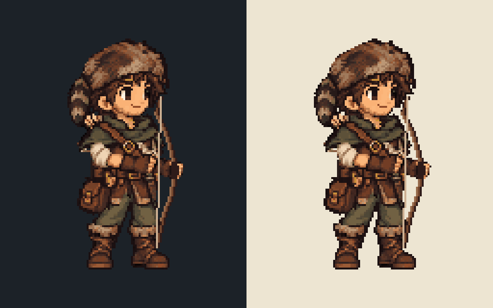
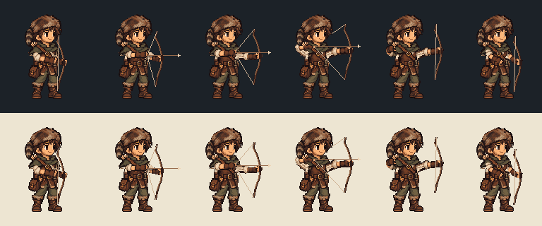

Motion reference: supplied six-frame sheet. Canonical face, hat, torso, cloak and feet preserved. Candidate, visual approval pending.
Left: dark background. Right: light background. Native 128 × 160, nearest 4×.

